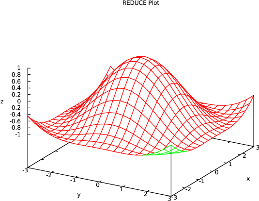
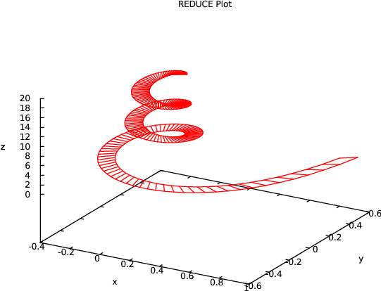
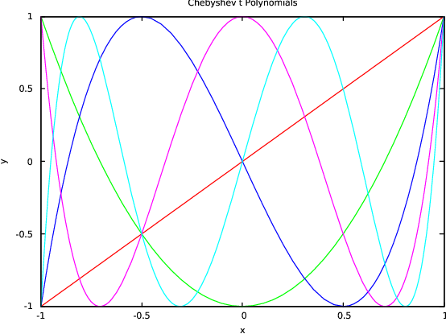
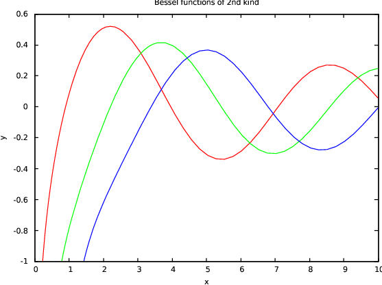

| Up | Next | Tail |
Graphical display of functions and data is done via an interface to the popular GNUPLOT package1 . It allows you to display functions in 2D and surfaces in 3D on a variety of output devices including X terminals, PC monitors, and postscript and Latex printer files.
The GNUPLOT system provides easy to use graphics output for curves or surfaces which are defined by formulas and/or data sets. GNUPLOT supports a variety of output devices such as VGA screen, postscript, picTeX, MS Windows. The REDUCE GNUPLOT package lets one use the GNUPLOT graphical output directly from inside REDUCE, either for the interactive display of curves/surfaces or for the production of pictures on paper.
Under REDUCE GNUPLOT is used as graphical output server, invoked by the command plot(...). This command can have a variable number of parameters:
A function to plot; a function can be
an expression with one unknown, e.g. u*sin(u)^2.
a list of expressions with one (identical) unknown, e.g. {sin(u), cos(u)}.
an expression with two unknowns, e.g. u*sin(u)^2+sqrt(v).
a list of expressions with two (identical) unknowns, e.g. {x^2+y^2,x^2-y^2}.
a parametic expression of the form point(<u>,<v>) or point(<u>,<v>,<w>) where u,v,w are expressions which depend of one or two parameters; if there is one parameter, the object describes a curve in the plane (only u and v) or in 3D space; if there are two parameters, the object describes a surface in 3D. The parameters are treated as independent variables. Example: point(sin t,cos t,t/10).
an equation with a symbol on the left-hand side and an expression with one or two unknowns on the right-hand side, e.g. dome= 1/(x^2+y^2).
an equation with an expression on the left-hand side and a zero on right-hand side describing implicitly a one dimensional variety in the plane (implicitly given curve), e.g. x^3 + x*y^2-9x = 0, or a two-dimensional surface in 3-dimensional Euclidean space,
an equation with an expression in two variables on the left-hand
side and a list of numbers on the right-hand side; the contour lines
corresponding to the given values are drawn, e.g.
x^3 - y^2 + x*y = {-2,-1,0,1,2}.
a list of points in 2 or 3 dimensions, e.g. {{0,0},{0,1},{1,1}} representing a curve,
a list of lists of points in 2 or 3 dimensions e.g. {{{0,0},{0,1},{1,1}}, {{0,0},{0,1},{1,1}}} representing a family of curves.
A range for a variable; this has the form variable=(lower_bound,.., upper_bound) where lower_bound and upper_bound must be expressions which evaluate to numbers. If no range is specified the default ranges for independent variables are \((-10\,\,..\,\,10)\) and the range for the dependent variable is set to maximum number of the GNUPLOT executable (using double floats on most IEEE machines). Additionally the number of interval subdivisions can be assigned as a formal quotient variable=(lower_bound..upper_bound)/<it> where it is a positive integer. E.g. (1 .. 5)/30 means the interval from \(1\) to \(5\) subdivided into \(30\) pieces of equal size. A subdivision parameter overrides the value of the variable points for this variable.
A plot option, either as fixed keyword, e.g. hidden3d or as equation e.g. term=pictex; free texts such as titles and labels should be enclosed in string quotes.
Please note that a blank has to be inserted between a number and a dot, otherwise the REDUCE translator will be misled.
If a function is given as an equation the left-hand side is mainly used as a label for the axis of the dependent variable.
In two dimensions, plot can be called with more than one explicit function; all curves are drawn in one picture. However, all these must use the same independent variable name. One of the functions can be a point set or a point set list. Normally all functions and point sets are plotted by lines. A point set is drawn by points only if functions and the point set are drawn in one picture.
The same applies to three dimensions with explicit functions. However, an implicitly given curve must be the sole object for one picture.
The functional expressions are evaluated in rounded mode. This is done automatically, it is not necessary to turn on rounded mode explicitly.
Examples:
plot(cos x);
plot(s=sin phi, phi=(-3 .. 3));
plot(sin phi, cos phi, phi=(-3 .. 3));
plot (cos sqrt(x^2 + y^2), x=(-3 .. 3), y=(-3 .. 3), hidden3d);
plot {{0,0},{0,1},{1,1},{0,0},{1,0},{0,1},{0.5,1.5},{1,1},{1,0}};
% parametric: screw
on rounded;
w := for j := 1:200 collect {1/j*sin j, 1/j*cos j, j/200}$
plot w;
% parametric: globe
dd := pi/15$
w := for u := dd step dd until pi-dd collect
for v := 0 step dd until 2pi collect
{sin(u)*cos(v), sin(u)*sin(v), cos(u)}$
plot w;
% implicit: superposition of polynomials
plot((x^2+y^2-9)*x*y = 0);
A composed graph can be defined by a rule-based operator. In that case each rule must contain a clause which restricts the rule application to numeric arguments, e.g.
operator my_step1;
let {my_step1(~x) => -1 when numberp x and x<-pi/2,
my_step1(~x) => 1 when numberp x and x>pi/2,
my_step1(~x) => sin x
when numberp x and -pi/2<=x and x<=pi/2};
plot(my_step2(x));
Of course, such a rule may call a procedure:
procedure my_step3(x); if x<-1 then -1 else if x>1 then 1 else x; operator my_step2; let my_step2(~x) => my_step3(x) when numberp x; plot(my_step2(x));
The direct use of a procedure with a numeric if clause is impossible.
The following plot options are supported in the plot command:
points=<integer>: the number of unconditionally computed data points; for a grid points^2 grid points are used. The default value is 20. The value of points is used only for variables for which no individual interval subdivision has been specified in the range specification.
refine=<integer>: the maximum depth of adaptive interval intersections. The default is 8. A value 0 switches any refinement off. Note that a high value may increase the computing time significantly.
The following additional GNUPLOT options are supported in the plot command:
title=name: the title (string) is put at the top of the picture.
axes labels: xlabel="text1", ylabel="text2", and for surfaces zlabel="text3". If omitted the axes are labeled by the independent and dependent variable names from the expression. Note that xlabel, ylabel, and zlabel here are used in the usual sense, \(x\) for the horizontal and \(y\) for the vertical axis in 2-d and \(z\) for the perpendicular axis under 3-d – these names do not refer to the variable names used in the expressions.
plot(1,x,(4*x^2-1)/2,(x*(12*x^2-5))/3, x=(-1 .. 1),
ylabel="L(x,n)", title="Legendre Polynomials");
terminal=name: prepare output for device type name. Every installation uses a default terminal as output device; some installations support additional devices such as printers; consult the original GNUPLOT documentation or the GNUPLOT Help for details.
output="filename": redirect the output to a file.
size="s_x,s_y": rescale the graph (not the window) where \(s_x\) and \(s_y\) are scaling factors for the \(x\)- and \(y\)-sizes. Defaults are \(s_x=1,x_z=1\). Note that scaling factors greater than 1 will often cause the picture to be too big for the window.
plot(1/(x^2+y^2), x=(0.1 .. 5), y=(0.1 .. 5), size="0.7,1");
view="r_x,r_z": set the viewpoint in 3 dimensions by turning the object around the \(x\) or \(z\) axis; the values are degrees (integers). Defaults are \(r_x=60,r_z=30\).
plot(1/(x^2+y^2), x=(0.1 .. 5), y=(0.1 .. 5), view="30,130");
contour resp. nocontour: in 3 dimensions an additional contour map is drawn (default: nocontour). Note that contour is an option which is executed by GNUPLOT by interpolating the precomputed function values. If you want to draw contour lines of a delicate formula, you had better use the contour form of the REDUCE plot command.
surface resp. nosurface: in 3 dimensions the surface is drawn, resp. suppressed (default: surface).
hidden3d: hidden line removal in 3 dimensions.
The following example works for a PostScript printer. If your printer uses a different communication, please find the correct setting for the terminal variable in the GNUPLOT documentation.
For a PostScript printer, add the options terminal=postscript and output="filename" to your plot command, e.g.
plot(sin x, x=(0 .. 10), terminal=postscript, output="sin.ps");
The basic mesh for finding an implicitly-given curve, the \(x,y\) plane is subdivided into an initial set of triangles. Those triangles which have an explicit zero point or which have two points with different signs are refined by subdivision. A further refinement is performed for triangles which do not have exactly two zero neighbours because such places may represent crossings, bifurcations, turning points or other difficulties. The initial subdivision and the refinements are controlled by the option points which is initially set to 20: the initial grid is refined unconditionally until approximately points * points equally-distributed points in the \(x,y\) plane have been generated.
The final mesh can be visualized in the picture by setting
on show_grid;
By default the functions are computed at predefined mesh points: the ranges are divided by the number associated with the option points in both directions.
For two dimensions the given mesh is adaptively smoothed when the curves are too coarse, especially if singularities are present. On the other hand refinement can be rather time-consuming if used with complicated expressions. You can control it with the option refine. At singularities the graph is interrupted.
In three dimensions no refinement is possible as GNUPLOT supports surfaces only with a fixed regular grid. In the case of a singularity the near neighborhood is tested; if a point there allows a function evaluation, its clipped value is used instead, otherwise a zero is inserted.
When plotting surfaces in three dimensions you have the option of hidden line removal. Because of an error in Gnuplot 3.2 the axes cannot be labeled correctly when hidden3d is used ; therefore they aren’t labelled at all. Hidden line removal is not available with point lists.
The command plotreset; deletes the current GNUPLOT output window. The next call to plot will then open a new one.
If GNUPLOT is invoked directly by an output pipe (UNIX and Windows), an eventual error in the GNUPLOT data transmission might cause GNUPLOT to quit. As REDUCE is unable to detect the broken pipe, you have to reset the plot system by calling the command plotreset; explicitly. Afterwards new graphics output can be produced.
Under Windows 3.1 and Windows NT, GNUPLOT has a text and a graph window. If you don’t want to see the text window, iconify it and activate the option update wgnuplot.ini from the graph window system menu - then the present screen layout (including the graph window size) will be saved and the text windows will come up iconified in future. You can also select some more features there and so tailor the graphic output. Before you terminate REDUCE you should terminate the graphic window by calling plotreset;. If you terminate REDUCE without deleting the GNUPLOT windows, use the command button from the GNUPLOT text window - it offers an exit function.
plotkeep If you want to use the internal GNUPLOT command sequence more than once (e.g. for producing a picture for a publication), you may set
on trplot, plotkeep;
trplot causes all GNUPLOT commands to be written additionally to the actual REDUCE output. Normally the data files are erased after calling GNUPLOT, however with plotkeep on the files are not erased.
GNUPLOT has a lot of facilities which are not accessed by the operators and parameters described above. Therefore genuine GNUPLOT commands can be sent by REDUCE. Please consult the GNUPLOT manual for the available commands and parameters. The general syntax for a GNUPLOT call inside REDUCE is
gnuplot(<cmd>,<p_1>,<p_2> ...)
where cmd is a command name and \(p_1,p_2, \ldots \) are the parameters, inside REDUCE separated by commas. The parameters are evaluated by REDUCE and then transmitted to GNUPLOT in GNUPLOT syntax. Usually a drawing is built by a sequence of commands which are buffered by REDUCE or the operating system. For terminating and activating them use the REDUCE command plotshow. Example:
gnuplot(set,polar); gnuplot(unset,parametric); gnuplot(set,dummy,x); gnuplot(plot, x*sin x); plotshow;
In this example the function expression is transferred literally to GNUPLOT, while REDUCE is responsible for computing the function values when plot is called. Note that GNUPLOT restrictions with respect to variable and function names have to be taken into account when using this type of operation. Important: String quotes are not transferred to the GNUPLOT executable; if the GNUPLOT syntax needs string quotes, you must add doubled stringquotes inside the argument string, e.g.
gnuplot(plot, """mydata""", "using 2:1");
The following are taken from a collection of sample plots (gnuplot.tst) and a set of tests for plotting special functions. The pictures are made using the qt GNUPLOT device and using the menu of the graphics window to export to PDF or PNG.
A simple plot for \(\sin (1/x)\):
plot(sin(1/x), x=(-1 .. 1), y=(-3 .. 3));
Some implicitly-defined curves:
plot(x^3 + y^3 - 3*x*y = {0,1,2,3}, x=(-2.5 .. 2), y=(-5 .. 5));

A test for hidden surfaces:
plot(cos sqrt(x^2 + y^2), x=(-3 .. 3), y=(-3 .. 3), hidden3d);

This may be slow on some machines because of a delicate evaluation context:
plot(sinh(x*y)/sinh(2*x*y), hidden3d);

on rounded;
w:= {for j:=1 step 0.1 until 20 collect {1/j*sin j, 1/j*cos j, j},
for j:=1 step 0.1 until 20 collect
{(0.1+1/j)*sin j, (0.1+1/j)*cos j, j} }$
plot w;

An example taken from: Cox, Little, O’Shea, Ideals, Varieties and Algorithms:
plot(point(3u+3u*v^2-u^3, 3v+3u^2*v-v^3, 3u^2-3v^2), hidden3d, title="Enneper Surface");

The following examples use the specfn package to draw a collection of Chebyshev T polynomials and Bessel Y functions. The special function package has to be loaded explicitely to make the operator ChebyshevT and BesselY available.
load_package specfn; plot(chebyshevt(1,x), chebyshevt(2,x), chebyshevt(3,x), chebyshevt(4,x), chebyshevt(5,x), x=(-1 .. 1), title="Chebyshev t Polynomials");

plot(bessely(0,x), bessely(1,x), bessely(2,x), x=(0.1 .. 10), y=(-1 .. 1), title="Bessel functions of 2nd kind");

| Up | Next | Front |
Hosted by